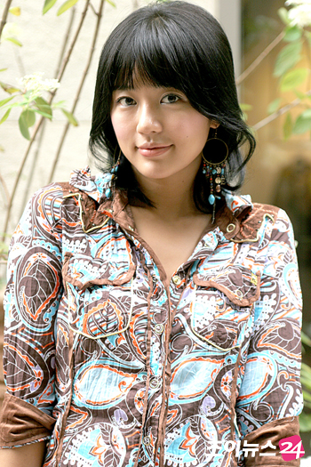
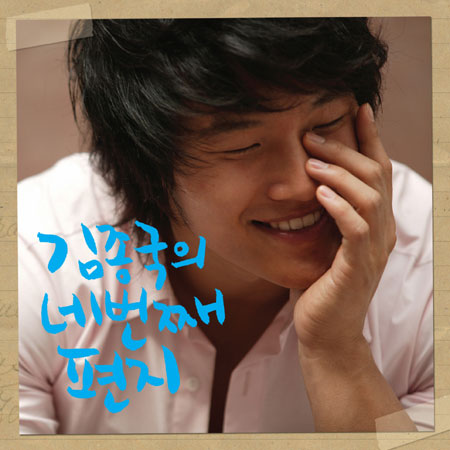

X-Man的御用恋人：金钟国☆尹恩惠
如果 X-Man有最佳情侣评选，绝对非金钟国、尹恩惠莫属。就连不认识这两个人的观众，看完X-Man后也一致认为这两人就是一对情侣，甚至有人觉得这两人极有可能结婚。
其实一开始，两人都未认真发现对方的存在，只是不知从什么时候开始，在“恋人壮士万万岁”这个环节，两个人变成了固定的搭档。也许是因为被称做少女壮士的尹恩惠，在那群性感娇媚的女明星中显得强壮，而使男嘉宾们怯步了。所以一直默不作声的金钟国，这个被叫做肌肉男的男人和尹恩惠走到了一起，开始了二人几乎不败的
couple之旅。
真正拉开两人缘份红线的应该是那则登报的绯闻，暧昧的情愫就这样大张旗鼓地摊在了众人的面前。于是，在“那是当然了”环节中，金钟国和尹恩惠相互被对手当成了攻击的借口；恋人壮士万万岁的情侣选择成为永远的爱人。但，爱情没有永恒不变的，其中的变数正是对这对恋人的考验。
首先是尹恩惠。因为恋情而受瞩目并且越发漂亮，尹恩惠自然变成了男士们追逐的对象，虽说女人的心是善变的，但对象也要是能和金钟国匹敌的男人。
Eric，神话中的老大，有着绝佳的条件，因此成为最佳人选。一块太妃糖改变了两人的关系，“甜蜜，而且让对方紧紧地跟着”，毫不犹豫吃下恩惠赠送的太妃糖的Eric算是接受告白了吗？一点点的暧昧更让人回味。

Eric、尹恩惠、金钟国，三个人的罗曼史开始在“那是当然了”中变得扑朔迷离。Eric与尹恩惠之间如同情侣般的质问，让这对恋人开始经历最大的考验。“你和钟国哥是不是已经结束了？”只是逞强的回答“那是当然了”也足够让金钟国这样的热血男儿发狂，然而一句“知道和钟国哥传绯闻很伤心吧？”则彻底伤了金钟国的心。被嫉妒冲昏头的金钟国，竟然说出罗曼史的结局是“两个人都死在我手里”这样的话。面对这种气势，
Eric退让了。当一个男人以死亡来悍卫自己的爱情时，那段爱情就已经再无其他男人插入的可能。
也许一开始
Eric的出现就注定是个路人，金钟国的强悍是不容许尹恩惠逃脱的，主动权应该都在自己的手里。于是，金钟国可以面对尹恩惠的舞蹈诱惑无动于衷，但在情侣选择中却又坚定地叫出那个熟悉的名字--尹恩惠。看得出，当金钟国面无表情地看着恩惠跳舞时，恩惠那委曲的表情，正是使金钟国心软的利器。

与尹恩惠的左右摇摆不同，金钟国更有作为男人的责任感。这种责任感与感情无关，男人既然选择了，就不该后悔，否则枉做男人。在壮士恋人万万岁中，面对其他女星的示好，已经站在尹恩惠身边的金钟国痛快地说出了对不起，这给了身边女人最大的安全感。只要这一点点的确定，尹恩惠相信了这个男人，就算只是游戏，能拥有这种被重视的感觉也是好的。
在外人看来，至此二人的感情几乎已是无坚不摧的了。金钟国小心翼翼地保护着看似坚强但总归是脆弱女孩的尹恩惠，当李民基再次问到是不是不喜欢恩惠时，金钟国轻轻掩住了尹恩惠的耳朵说了“那是当然了”。不止尹恩惠，观众也跟着感动起来，一个男人的尊严要求他赢得游戏，但他又不允许自己伤害这个女孩，所以金钟国选择不让尹恩惠听到这残忍的回答。
一直以来，只要金钟国和尹恩惠同时出现在
X-Man的同一队时，真的就成了上天注定的恋人，中间或许会出现许多挫折和考验，只是到最后他总是会牵到她的手。而两个人的“恋爱关系”也成了X-Man收视上的一大保证，现在就连韩国媒体也在纷纷猜测，这两个的关系，是不是戏里戏外都是真的。也许X-Man播下去，这对恋人也会一路走下去的